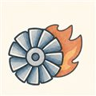
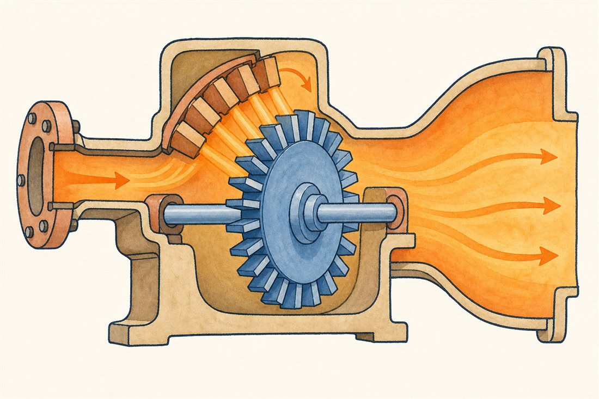
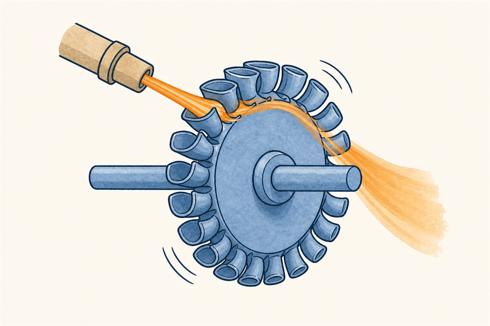
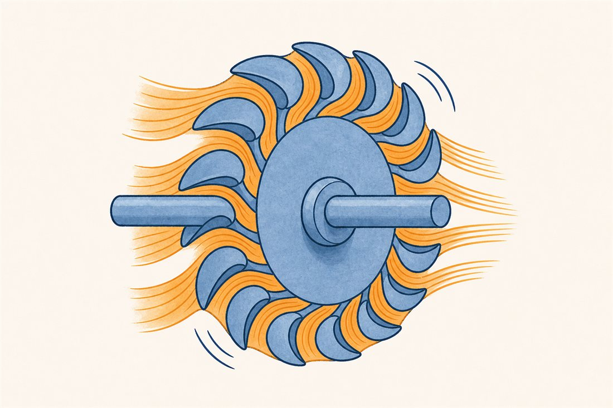
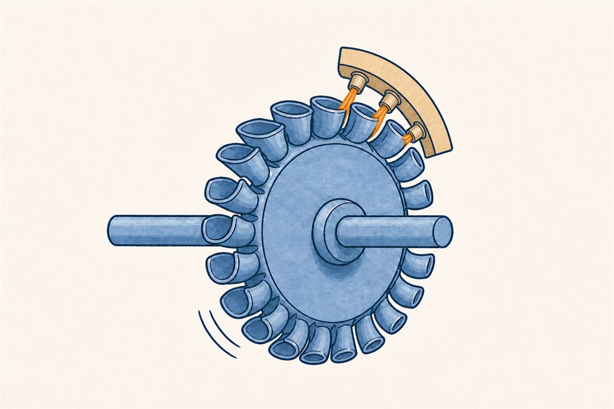

第3巻 だい4わ ── 動力の章まわす火
円盤を回すには動力が要ります——SSMEの燃料ポンプなら数万馬力ぶん。それを供給するのが、軸の反対側に座る駆動タービンです。ガスをどう用意するかは第1巻第4話で見たサイクルの選択そのもの: ガス発生器なら燃やした数百℃の富、エキスパンダーブリードなら冷却路で温めた倹約の水素。今日はそのガスを「回す力」に換える翼車側の設計を解剖します。

タービンの働かせ方には流儀があります。3つの顔を切り替えてみてください——3つめは、初めて見ると不思議な割り切りです。



よりみちバケツに当てるか、通り道で加速するか
衝動タービンは、静止ノズルでガスを一気に加速してから、バケツ形の羽根に当てて向きを変えさせ、運動量の変化で回します——圧力の落差はほぼ全部ノズルで使い切る。反動タービンは、圧力の落差の一部を回る羽根の中でも使う——動翼の中でも静圧が下がり、動翼相対系で流れが加速する段です（庭のスプリンクラーが水の噴き出しで回るのと同じ理屈）。ロケットのタービンは衝動型が主流。落差が大きく流量が少ない条件では、ノズルに仕事を集めて羽根はシンプルに保つほうが強いからです。第2巻07話の航空タービン（反動成分の大きい多段）と見比べると、同じ「タービン」の言葉の下の設計思想の距離がよく見えます。
よりみち翼車の一部にしか、ガスを当てない
切り替え図の3つめ——ノズルが翼車の一部の弧にしか付いていない部分流入は、ロケットタービンの名物です（当てる弧の割合は設計それぞれで、数%から数十%まで様々）。流量が少なく落差が大きいと、全周にノズルを並べる設計では通路が細くなりすぎて損が膨らむ。それなら一部の弧に絞って、そこだけ堂々と吹くほうが総合で得——という割り切りです。代償は、翼が1回転ごとに「吹かれる区間」と「無風の区間」を横切ること。翼には周期的な力のノックが入り、振動設計（第6話）への宿題になります。効率の数%と単純さ・軽さを天秤にかける、いかにもロケットらしい選択です。
 流体屋のためのノート
流体屋のためのノート
設計の物差しは速度比 u/c₀（周速÷ノズル理論噴出速度）。衝動段の最適はおよそ0.5弱ですが、ロケットではポンプ側の回転数で u が縛られ、大落差で c₀ が巨大になるため、最適よりずっと低い u/c₀ で我慢して効率を捨てる判断がしばしば正解になります（だから2段衝動やベロシティコンパウンドが出てくる）。駆動ガスの素性はサイクル直結: 代表的なLOX/LH₂やケロシン系のGGでは、タービン材の都合で温度を絞るためfuel-richの数百℃級を使うことが多く（酸化剤リッチという流儀もあります）、エキスパンダーブリードの水素はずっと低温で、材料も酸化の心配も軽い——LE-9の「安全なエンジン」の設計思想はタービンの部屋でいちばん分かりやすく現れます。動力の桁の再確認: HPFTPはこの小さな翼車から約77,000馬力(FPL)を引き出していました。次話は、この火と氷を隔てる国境の話。
{kind=link}
・G. P. Sutton & O. Biblarz, Rocket Propulsion Elements, 9th ed., ch.10（駆動タービン・部分流入）
・NASA SP-8107, Turbopump Systems for Liquid Rocket Engines
・HPFTP出力: NTRS 19900003334（FPLで約77,000hp）